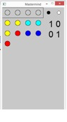
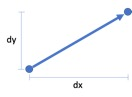
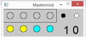
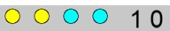
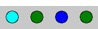
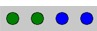

O jogo "Mastermind"
O Mastermind é um jogo de tabuleiro cujo objetivo é descodificar um determinado código, e que foi inventado em 1970 por Mordecai Meirowitz. A figura seguinte apresenta o tabuleiro [Wikipedia]:

As regras do jogo são as seguintes:
· O código é composto por 4 pinos de diversas cores (tipicamente 6), excetuando o preto e o branco. Na imagem do tabuleiro, a chave é constituída pelos 4 pinos na extremidade mais próxima, escondidos do jogador, que se encontra na extremidade mais afastada;
· O jogador apresenta combinações de 4 pinos até acertar ou exceder o número de possibilidades (tipicamente 12); Na imagem do tabuleiro, a primeira jogada é composta pelos 4 pinos mais afastados: amarelo, amarelo, azul, azul.
· A cada jogada, o jogador é informado de quantos pinos têm a cor certa e estão no sítio certo (pinos pretos, na imagem do tabuleiro, pinos vermelhos). E de quantos têm a cor certa, mas estão na posição errada (pinos brancos). Na imagem do tabuleiro, os 4 pinos da primeira jogada são acompanhados por 1 pino branco. Este pino indica ao jogador que acertou na cor de um pino da chave, mas a posição está errada. Por outro lado, os pinos da sexta jogada, são acompanhados por 4 pequenos pinos vermelhos, o que significa que o jogador acertou na chave, ou seja, acertou nas 4 cores e nas 4 posições dos pinos da chave.
1 inicialização do jogo
Este jogo já apresenta alguma complexidade, pelo que será útil utilizar a decomposição do problema para estruturar melhor o jogo em subproblemas.
O jogo requer alguma funcionalidade gráfica e optámos por estruturá-lo em p5, através das funções típicas: setup()e draw().
Na imagem ao lado, vemos que a chave se encontra escondida, no topo, e que, após a primeira jogada (amarelo, amarelo, cyan, cyan), o computador indica 1 pino preto e zero pinos brancos, o que significa que o jogador acertou na cor e na posição de um dos pinos da chave.
Será necessário importar o módulo p5, bem como o módulo random para selecionar a chave de forma aleatória.
from p5 import *
import random
Comecemos por definir um tuplo que representa o conjunto de cores (CORES) e o número de pinos que compõem a chave (DIM_CHAVE), bem como o diâmetro da representação dos pinos (DIAMETRO) e o número máximo de tentativas para adivinhar a chave (MAX_JOGADAS):
CORES = ("red", "green", "blue", "cyan", "yellow", "magenta")
DIM_CHAVE = 4
DIAMETRO = 50
MAX_JOGADAS = 12
O DIAMETRO pode ser definido de forma a alterar a dimensão do tabuleiro e símbolos de jogo.
|
|
A constante MAX_JOGADAS acaba por definir o comprimento do tabuleiro de jogo pois define o número de linhas do tabuleiro (observe a figura anterior).
|
Definamos também algumas variáveis globais, que representam a chave a adivinhar (chave), a jogada atual do jogador (jogada), a representação do tabuleiro (tabuleiro)...
chave = None
jogada = [0]
tabuleiro = []
|
|
A variável chave será um tuplo, uma vez que depois de criada não será alterada. Mas como os tuplos são imutáveis, será inicializada por None, que representa a ausência de um valor. As outras duas variáveis são listas, pois irão ser alteradas com o decorrer do jogo.
|
E ainda duas variáveis auxiliares... O número de tentativas restantes, que é inicializado com MAX_JOGADAS.
tentativas = MAX_JOGADAS
E duas variáveis booleanas que permitem saber se o jogo e a jogada já terminaram.
terminou = False
jogou = False
A função setup()terá a seguinte funcionalidade:
1. Criar a chave como uma combinação aleatória das 6 cores numa sequência de 4 pinos.
Através de um ciclo contado (for) cria-se um tuplo de 4 valores (DIM_CHAVE) com inteiros de 0 a 5 (consoante as 6 cores definidas em CORES).
|
|
A variável chave será alterada, pelo que é necessário referir isso no início da função: global chave |
2. Definir a dimensão da janela gráfica do p5, bem como o título da janela ("Mastermind").
A dimensão da janela poderá ser calculada tendo em conta: a largura depende do número de pinos e do espaço para colocar o número de pinos pretos e brancos, que se considera igual à largura de 2 pinos. A altura da janela será dependente do número de jogadas máximo (1 linha por jogada) + 1 linha para a chave. Estas dimensões são multiplicadas pelo diâmetro dos pinos.
3. Criar uma font de texto para visualizar o número de pinos pretos e brancos, do tipo "Arial" de tamanho 42, alinhada à esquerda e centrada na coordenada indicada.
Obs.: Será necessário colocar na pasta do ficheiro .py o ficheiro "Arial.ttf".
Eis o código da função setup():
def setup():
global chave
# chave
chave = (random.randint(0,len(CORES)-1), )
for i in range(DIM_CHAVE-1):
chave = chave + (random.randint(0,len(CORES)-1), )
# janela
size(DIAMETRO*(DIM_CHAVE+2), DIAMETRO*(MAX_JOGADAS+1))
title("Mastermind")
# texto
f = create_font("Arial.ttf", 42)
text_font(f)
text_align("LEFT", "CENTER")
|
|
A função create_font() importa uma font vetorial de um ficheiro, a função text_font() seleciona-a como font corrente e a função text_align() define o alinhamento do texto sobre o ponto de inserção: Para mais detalhes consulte Typography no p5.
|
|
|
Ao longo deste tutorial iremos utilizar os tuplos como abstração primordial para o jogo, deixando as listas apenas para as situações que requerem estruturas de dados mutáveis.
|
2 Iterando através das jogadas – o ciclo de jogo
O ciclo de jogo é executado através da função draw() do módulo p5, como agora se vai ver
2.1 Input do jogador
Nesta implementação do jogo, o jogador interage com o teclado (teclas do cursor: ¬, ¯, ®, ) para escolher a cor que pretende para cada pino.
Este subproblema será desenvolvido através da função key_pressed() do módulo p5, como se verá no ponto 3.
2.2 Lógica do jogo
Começamos por verificar se o jogador já não tem tentativas (comprimento do tabuleiro é igual ao número de tentativas) ou se a última jogada acertou na chave, caso em que o jogo termina, com a derrota ou a vitória, respetivamente.
def draw():
global tabuleiro, chave, jogada , tentativas, terminou, jogou
# 2.2. logica de jogo
# verifica se jogo terminou
if len(tabuleiro)>0:
ult_jogada = tabuleiro[-1]
if ult_jogada[0:DIM_CHAVE] == chave or tentativas == 0:
terminou = True
|
|
A variável terminou é denominada de flag (ou "bandeira") pois assinala um estado booleano (0 ou 1 / "on" ou "off"). Neste caso se o jogo terminou ou não. Será utilizada para apenas para restringir a interação do jogador com o jogo enquanto este não terminar.
Esta variável será verdadeira caso o jogador acerte na chave na última jogada, ou o número de tentativas se esgotar (zero).
Observe a forma como é indexada a última jogada: tabuleiro[-1]
|
O jogador poderá terminar o jogo premindo "ESC" ou fechando a janela.
Em seguida, verificamos se a jogada está completa (jogador insere quarto pino e prime tecla ).
# verifica se a jogada já foi concluída pelo jogador
if jogou:
# acrescenta jogada ao tabuleiro com a respetiva pontuação
tabuleiro.append(tuple(jogada) + pinos(chave, jogada))
tentativas -= 1
jogada = [0]
jogou = False
Nesse caso, adiciona-se ao tabuleiro a jogada (4 pinos) + um par de valores (um tuplo) com o número de pinos pretos e o número de pinos brancos.
É também decrementado (subtrair um) o número de tentativas restantes, inicializada a jogada seguinte com o pino inicial vermelho (índice 0) e desbloqueada a jogada (jogou = False).
Como são determinados o número de pinos brancos e o número de pinos pretos?
Esse é um subproblema que é solucionado pela função pinos(), comparando chave com jogada, e que será explicado posteriormente (ponto 4).
2.3 Output - visualização do tabuleiro de jogo e jogadas efetuadas
O algoritmo de output (visualização) contempla os seguintes passos:
1. Limpar a janela
Para que a visualização seja interativa, é necessário animar a seleção dos pinos de cada jogada, pelo que é sempre necessário limpar o ecrã da janela de jogo com a função background().
# 2.3.1. Limpa o ecrã de jogo
background(200)
2. Desenhar a chave
A chave é, normalmente, desenhada apenas com círculos vazios, de forma a não ser revelada.
No final do jogo (em que a variável terminou é verdadeira), a chave já é desenhada com as cores corretas.
# 2.3.2. desenha chave
fill(200)
# primeiro, desenha o retângulo que envolve a chave
rect((0,0), DIAMETRO*(DIM_CHAVE), DIAMETRO)
ponto = (DIAMETRO//2, DIAMETRO//2)
# chave, normalmente, escondida é visualizada através de círculos vazios.
# No final do jogo, a chave é visualizada com as suas cores.
for i in range (DIM_CHAVE):
if terminou:
# mostra chave no final do jogo
fill(CORES[chave[i]])
circle(move_ponto(ponto, i*DIAMETRO, 0), DIAMETRO//2)
|
|
Deve ter reparado que neste código utilizamos uma função auxiliar, move_ponto(). Trata-se de uma função que recebe um ponto (tuplo de dois valores - as suas coordenadas) e que retorna um ponto deslocado de um vetor, como se pode verificar na figura seguinte.  A função, a definir no início do ficheiro, é a seguinte: def move_ponto(ponto, dx, dy): x = ponto[0] y = ponto[1] return (x+dx, y+dy) |
3. Legenda P&B
Segue-se a legenda para os pinos brancos e pretos - círculo preto e círculo branco.
# 2.3.3. legenda para os pinos
fill(0)
circle(((DIM_CHAVE+0.5)*DIAMETRO, DIAMETRO//2), DIAMETRO//3)
fill(255)
circle(((DIM_CHAVE+1.5)*DIAMETRO, DIAMETRO//2), DIAMETRO//3)
|
|
Repare que tanto o "branco" como o "preto" têm os três componentes RGB idênticos, pelo que basta colocar um valor. O "preto" corresponde à ausência de cor (valor 0). O "branco" corresponde à intensidade máxima de cor (valor 255). |
4. Jogadas anteriores e jogada atual
Para cada linha do tabuleiro, visualiza as jogadas efetuadas, incluindo os 4 pinos e o número de pinos pretos e de pinos brancos.
# 2.3.4. desenha jogadas anteriores
for linha in tabuleiro:
ponto = (DIAMETRO//2, ponto[1]+DIAMETRO)
for i in range(DIM_CHAVE):
fill(CORES[linha[i]])
circle(ponto, DIAMETRO//2)
ponto = move_ponto(ponto, DIAMETRO, 0)
# pinos P&B
fill(0)
text(str(linha[-2])+" "+str(linha[-1]), ponto)
|
|
Repare que o tuplo de cada jogada tem seis valores:
Os quatro pinos da jogada e o número de pretos e brancos:  A linha anterior compõe os números numa cadeia de texto para ser visualizada à direita dos 4 pinos da jogada: " 1 0" O valor de P é linha[-2] e o valor de B é linha[-1]. O penúltimo e o último valor do tuplo. A função text() desenha esta cadeia de caracteres centrada em ponto. |
No caso da jogada atual, enquanto o jogador vai escolhendo as cores de cada pino, o número de pinos definidos vai variandode 1 a 4...
# 2.3.5. desenha jogada atual
if not terminou:
ponto = (DIAMETRO//2, ponto[1]+DIAMETRO)
for pino in jogada:
fill(CORES[pino])
circle(ponto, DIAMETRO//2)
ponto = move_ponto(ponto, DIAMETRO, 0)
A jogada atual só é visualizada caso o jogo não tenha terminado.
3 Interação com o teclado
A função que recebe os eventos provocados pelo teclado é a função key_pressed().
A variável key guarda o valor da tecla premida. Uma seleção múltipla permite avaliar se o jogador premiu alguma das teclas do cursor.
· ® adiciona/seleciona o pino à direita.
Se a jogada tiver já 4 pinos, ao premir ® termina a jogada (variável jogou torna-se True).
· ¬ seleciona o pino à esquerda
· muda cor do pino para a seguinte
· ¯ muda cor do pino para a seguinte
Quando o jogo terminar (jogada fica uma lista vazia) o jogador deixa de poder interagir. A função retorna antes da seleção das teclas.
# controla a interação com o utilizador através do teclado
def key_pressed():
global jogada, terminou, jogou
# se jogo terminou não permite jogar
if terminou or jogou:
return
# verifica teclas premidas
if key == "UP":
jogada[-1] = (jogada[-1] + 1) % len(CORES)
elif key == "DOWN":
jogada[-1] = (jogada[-1] - 1) % len(CORES)
elif key == "LEFT":
if len(jogada)>1:
jogada.pop()
elif key == "RIGHT":
if len(jogada) < DIM_CHAVE:
# acrescenta pino
jogada.append(0)
else:
# ou termina jogada
jogou = True
4 Determinar quantos pinos da jogada estão certos
Tendo em consideração a complexidade do problema de calcular o número de pinos certos na posição certa e os pinos certos mas na posição errada, desenvolveu-se a função pinos(). Esta função tem dois parâmetros: a chave e a jogada.
O algoritmo desta função tem dois passos principais, seguindo-se o retorno da função com um par de valores (tuplo de 2 posições):
def pinos(chave, jogada):
1. Determinar o número de pinos de cada cor que existem na jogada e na chave. Para tal calcula-se o mínimo entre as ocorrências da cor na chave e na jogada, utilizando a função count().
pinosB = 0
for i in range(len(CORES)):
pinosB += min(chave.count(i), jogada.count(i))
2. Determinar o número de pinos certos na posição certa (pinos pretos), verificando a correspondência das 4 posições das cores na chave e na jogada.
pinosP = 0
# 2.1. verifica se jogo terminou
for i in range(4):
if chave[i] == jogada[i]:
pinosP += 1
3. Finalmente retorna-se um par de valores com o número de pinos pretos e brancos.
Repare que o número de pinos brancos é obtido subtraindo às cores certas na jogada as que também estão na posição certa.
return (pinosP, pinosB-pinosP)
|
|
Pareceu um tanto confuso?.. Observe o seguinte exemplo Considere a seguinte chave:  E a seguinte jogada:  Primeiro, começamos por contar os pinos de cada cor que existem na chave: pinosB = 2 verdes + 1 azul + 0 ciano = 3
Em seguida verificamos os que têm a cor certa e estão na posição certa: pinosP = 2
Os valores serão assim: P = pinosP = 2 B = pinosB-pinosP = 3 - 2 = 1 |
Não esquecer de no final do ficheiro colocar o seguinte código:
if __name__ == '__main__':
run()
|
|
Sendo este tutorial englobado no âmbito do capítulo que refere os tuplos, é natural utilizarmos esta abstração de dados. Mas será a única solução? Existem outras, como as listas, que irá explorar no próximo capítulo. A razão porque foram utilizados no Mastermind prende-se com o facto de tanto a chave, como as cores das peças de jogo, e cada jogada, serem imutáveis. Ou seja, não é conveniente que estes dados sejam alterados ao longo do jogo. Mas por outro lado, o tabuleiro é dinâmico ao longo do jogo... e por isso foi implementado como uma lista.
Analise novamente o jogo e observe estas opções de estruturas de dados.
Quando explorar as listas no próximo capítulo tente avaliar quais as vantagens e desvantagens dos tuplos. |
5 Desafio final
Acrescente a possibilidade de se utilizarem as teclas "1" a "6" para escolher diretamente a cor. Desenhe também o tabuleiro completo, com círculos sem preenchimento.
|
|
Partilhe o seu jogo!
|